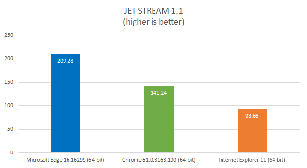

The Microsoft Edge team ran the Apple Jetstream 1.1 benchmark on the latest versions of Microsoft Edge, Google Chrome, and Internet Explorer as of 12/1/2017: Microsoft Edge 16.16299, Google Chrome 61.0.3163.100, and Internet Explorer 11.
For all three browsers, the test was performed on the same desktop PC running Windows 10 Fall Creators Update (build 16299) and connected to the Internet through Ethernet.
Microsoft Edge scored 39% faster than Google Chrome and 123% faster than Internet Explorer 11 according to the Apple Jetstream 1.1 benchmark.
| Jetstream 1.1 score | |
| Internet Explorer 11 (64-bit) | 93.66 |
| Chrome 61 (64-bit) | 141.24 |
| Microsoft Edge 16 (64-bit) | 209.28 |
The test was performed on a desktop PC running the Windows 10 Fall Creator's Update (16299 release). All tests were initiated manually on identical remote machines in a test lab (OptiPlex 7010 with Intel(R) Core(TM) i5-3475S CPU @ 2.90GHz (4 CPUs), ~2.9GHz and 4GB RAM) with no other applications running. Power and internet cables were connected during the tests. Each test was run three times in each browser, with the median score reported above.
| OS | Windows 10 Pro 16299 |
| Microsoft Edge | Microsoft EdgeHTML 16.16299 |
| Chrome | Google Chrome 61.0.3163.100 (64-bit) |
| Internet Explorer | Microsoft MSHTML 8.0 (64-bit) |
| Processor | i5-3475S @ 2.90GHz (4 CPUs) |
| Memory | 4GB |